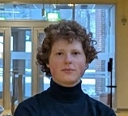

Hotfullt nära verkligheten
•••
Hem
PDF:er
Notiser
Hear me out:s
Länk nav
Om oss
Kontaktinfo
Kontaktinfo
Redaktionen: kontakt@ostraloken.se
Redaktör & skribent: Vilhelm Grill
Skribent: Joar Stange

Skribent: John Ericson
Skribent: Magne Nordström
Fotograf & skribent: Elliot Sandström